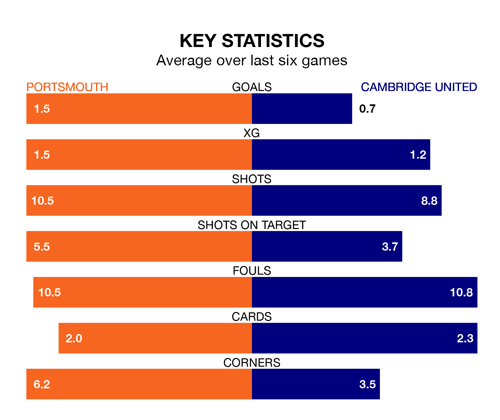

Portsmouth are heavy favourites to keep all three points at home in Tuesday's late kick-off against Cambridge United.
Pompey, who sit top of EFL League One with 32 games played, are priced at 1.4 to seal victory at Fratton Park.
Sitting 16 places and 31 points behind them in the table, Cambridge are 6.7 to win with *Betting Company*, while the draw is at 4.2.
With Will Norris between the sticks, Portsmouth can rely on one of the league's safest pair of hands. He has kept 15 clean sheets in his 32 appearances this season, and no 'keeper has prevented the opposition scoring more often in EFL League One.
In Cambridge's net, Jack Stevens has nine clean sheets in 24 games. He has conceded a goal every 80 minutes, 40% more often than the 115 minutes between goals for Norris.
With 25 goals in 29 games so far this season, United are scoring at below the league average rate with 0.9 goals per game. But they are conceding fewer than average too, letting in 35 goals at a rate of 1.2 per game.
Pompey, meanwhile, are above average scorers, with 1.6 goals per game, compared to a league average of 1.3. They have conceded 0.9 goals per game.
In the last 10 years, Portsmouth and Cambridge have played each other on 10 occasions. Portsmouth won six of them, Cambridge two, and they drew twice.
On average, Pompey scored 1.5 goals and Cambridge 0.8 in those matches.
Their last meeting was on October 24, when they played out a 0-0 draw.
The hosts are in good form in EFL League One, with four wins and a draw from their last six games.
With two wins and two draws over that period, the away side's form is worse – they have taken eight points from 18, compared to Portsmouth's 13.
Portsmouth's last match was on Saturday, a 1-0 win against Carlisle United, with Patrick Lane getting the goal for Pompey.
Cambridge lost 1-0 against Cheltenham Town last time out, also on Saturday.
Tuesday's match will be refereed by Robert Madley, who has taken charge of three EFL League One games so far this season, issuing no red cards and booking 17 players. He has awarded one penalty.
The last Portsmouth game Madley refereed was a 2-0 home win against Bolton Wanderers on December 11. He is yet to oversee a match featuring Cambridge this season.
Updated: 09:02 (UTC), 13/02/24